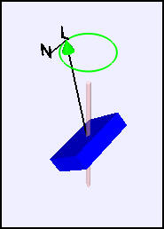

The angular momentum vector is not aligned with the axel rotation if the box is tilted.
The Rotation About a Fixed Axis example computes the angular momentum of a rigid rectangular box attached to a rotating axle. The fixed axis is in the z-direction so that the angular velocity is ω=(0, 0, ω). Users can tilt the box relative to the axle and can change the box dimensions. The simulation shows that the angular momentum vector L is not aligned with the the angular velocity vector ω unless the box is rotating about an axis parallel to a box edge. The simulation also shows the torque N that must be applied to the axel to maintain its fixed orientation.
The angular momentum L of a box rotating with angular velocity ω is
L = I w
where L and ω are vectors and I is the moment of inertia tensor. Although this equation is true in any reference frame, the vector and tensor components are frame dependent. Additional windows within the simulation display the frame-dependent algebra in an inertial reference frame fixed in space and in a non-inertial reference frame attached to the rotating box with a rotation axis parallel to a box edge. Because the moment of inertia tensor (matrix) in the body frame is diagonal, the angular momentum computation in this non-inertial body frame is much simpler than the computation in the inertial space frame. A non-inertial reference frame will, however, introduce frame-dependent forces when solving the dynamical equations for rigid body motion.
The following EJS models are described in Chapter 17 of the EJS adaptation of An Introduction to Computer Simulation Methods.
The Rotation About a Fixed Axis example was developed by Wolfgang Christian using the Easy Java Simulations (EJS) modeling tool version 4.3. You can examine and modify the model for this simulation if you have Ejs installed by right-clicking within the program and selecting "Open Ejs Model" from the pop-up menu.
Information about EJS is available at: <http://www.um.es/fem/Ejs/> and in the OSP ComPADRE collection <http://www.compadre.org/OSP/>.